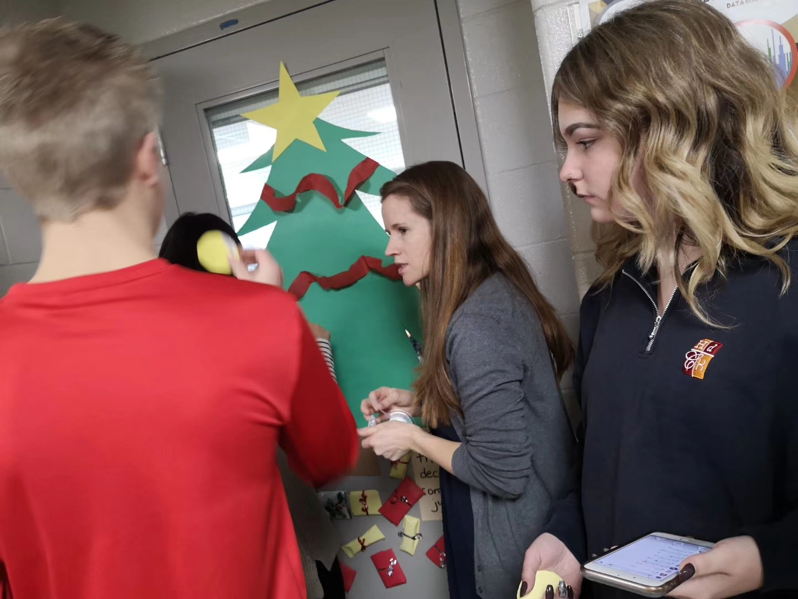

从小学开始接触画画到后来学习国画，我从绘画中学习到很多。初二的时候因为学习压力太大，就很少再画画。现在时间充裕，又重新拾起毛笔，但是却不能像之前那样大胆的画。我跟妈妈抱怨说，我画的好丑。妈妈告诉我，重要的不是你画的好还是不好，重要的是你在坚持做一件事情。慢慢的我不再像以前那样觉得像是要完成任务，而是能做到真正的静下心来，乐在其中。它真正的成为了我的爱好，我生活的一部分。我想这才是学习画画最大的意义。

那是我第一次正式的穿上校服和同学们一起坐在课室里听课。从读拼音到写作文，从加减乘除法到方程，在那里我学习了很多基础的知识。在那里我也学会了如何做一个更好的人，小到过马路时要走斑马线，大到滴水之恩应涌泉相报。在那里我也接触了很多课外活动，和班里同学一起去春游秋游，参加无线电测向，学习舞蹈，绘画。我也在那里遇见了我最好的朋友。那是一段十分快乐又有意义的时光。


初中我第一次离开家和同学们一起体验住宿生活，学着做一个独立的人。省附有着十分好的校园环境，校道是我们每一个省附人的回忆，那里有我们努力奔跑的背影，有我们和朋友的谈天说地，那里的春夏秋冬，都有我们的酸甜苦辣。有丰富的课外活动，特别是每年都令人期待无比的在晚上的校运会开幕式。省附还有一些特别的课堂，舞蹈课、心理课、烹饪课、游泳课和陶艺课。每个学期期末考试后还能和同学们一起去参加社会实践活动。那是一段有笑有泪，美好的回忆。


在广外的时间虽然只有一年，但也有满满的特别的回忆。在那里我第一次完成了完整的军训，和全级同学一起用手语唱感恩的心，和全班同学一起准备红歌会，为了吃饭和全班同学一起对着饭堂唱军歌。和全级同学一起完成了一次近28公里的徒步，在路上大家互相的鼓励帮助。在那里也参加了学农活动，第一次真正的下到地里干从未干过的农活。从对着宿舍门口的宿舍表背舍友的名字到和她们打成一片，一幕幕都还记忆犹新。那段时光充满了欢歌笑语，也在不断成长。
第一次离家那么远来到一个新的国家，这对于我来说是一个很重要的转折点。在这里也遇到了很多挑战，语言问题，气候的适应，不同的饮食习惯等等，都需要我变得更加的独立。当然在这里我有很多收获。因为学业太重，已经放下了快两年的国画，现在又重新拾起。在这里感受到了不同的课堂氛围，更加的开放，有活力。在这里我也第一次接触了编程，第一次写一篇完整的物理报告。还有很多有趣的课堂回忆，教大家怎么做玉米羹汤圆，教大家怎么做灯笼。在这里让我对很多事情都有了新的理解，也变得更加自信。
